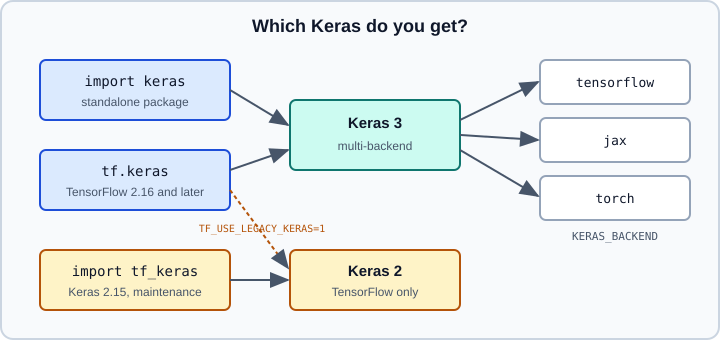

Keras 3 Overview: keras, tf.keras & tf_keras
|
This content was generated with the assistance of AI and should be verified against the official documentation before being relied on in production. |
Keras is the high-level API for building and training neural networks, and in the TensorFlow ecosystem it is the layer most code is written in. Since TensorFlow 2.16 it has also become a source of confusion, because three names now refer to different things: the standalone keras package (Keras 3), tf.keras inside TensorFlow, and the tf_keras package (Keras 2). This page sorts out which is which, how to choose a backend and how to stay on Keras 2 when you must. The model-building pages that follow are Sequential and Functional Models, Subclassing and Custom Layers and compile, fit, evaluate and predict; running on JAX or PyTorch is on Keras Multi-Backend, and the upgrade checklist on Migrating from Keras 2 to Keras 3.
It targets Python 3.13 and TensorFlow 2.21 with Keras 3.15 (TensorFlow 2.22 is labelled "upcoming"; PyTorch 2.15 where mentioned) and was checked against the official documentation on 2026-10-30. Examples were run on Python 3.13 with TensorFlow 2.21 and Keras 3.15 (CPU) on 2026-10-31, with the backend-selection examples on the JAX backend. For the bigger picture see the TensorFlow overview, Choosing a Framework and the PyTorch-side equivalent of a model class, nn.Module.
Three names, three things

| Name | What it is | Notes |
|---|---|---|
|
The standalone Keras 3 package, |
Multi-backend: TensorFlow, JAX or PyTorch for training, plus OpenVINO for inference only (added in Keras 3.8). Does not install a backend for you. |
|
The Keras namespace exposed by TensorFlow |
From TensorFlow 2.16 onward it resolves to Keras 3 by default, running on the TensorFlow backend. |
|
The Keras 2 code base published under a new name (its version follows TensorFlow, 2.21.0 for TensorFlow 2.21) |
Maintenance mode: no new features or performance work, only bug fixes. Needed to keep Keras 2 behaviour. |
Source: https://keras.io/keras_3/
The consequence is that import keras and from tensorflow import keras now give you the same major version on a normal TensorFlow 2.21 installation. Prefer import keras in new code: it is shorter, it makes backend portability possible and it does not depend on what TensorFlow does with its alias. The official guidance is not to mix Keras 3 and the Keras 2 tf_keras package side by side, because they are separate packages on separate engines. Objects from one cannot be passed to the other.
Older books and tutorials describe the pre-2.16 situation, where tf.keras was Keras 2 and keras on PyPI mostly meant the same code. Their layer, model and saving examples often still run, but the details differ: the default saving format, optimizer namespace, preprocessing layers and some argument names changed. Use the migration page rather than patching old code line by line.
Installing
# Keras 3 on the TensorFlow backend (the default when TensorFlow is installed)
python -m pip install "tensorflow==2.21.*" keras
# Keras 3 on JAX or PyTorch instead (install the framework you choose)
python -m pip install keras jax
python -m pip install keras torchTensorFlow’s own installation page covers GPU wheels, WSL2 and macOS; see Installation. Installing tensorflow pulls a compatible keras as a dependency, so a separate install is only needed to pin or upgrade it. Check the Keras requirements for your backend version before upgrading either independently.
Choosing a backend
Keras 3 reads the backend name from the environment variable KERAS_BACKEND or from the backend key of the config file ~/.keras/keras.json. The environment variable must be set before the first import keras; changing it afterwards has no effect for that process.
import os
os.environ["KERAS_BACKEND"] = "jax" # "tensorflow", "jax", "torch" (and "openvino" for inference)
import keras
print(keras.__version__) # 3.15.1
print(keras.backend.backend()) # jaxSource: https://keras.io/keras_3/
Or in the shell, which is the safer way in scripts and notebooks:
export KERAS_BACKEND=torch
python train.pyThe same choice can be written into the config file:
{
"backend": "tensorflow"
}Source: https://keras.io/keras_3/
The backend table:
KERAS_BACKEND |
Capability | Typical reason to choose it |
|---|---|---|
|
training and inference |
|
|
training and inference |
XLA-compiled speed on GPU and TPU, functional style, large-scale research |
|
training and inference |
reuse PyTorch tensors, ecosystem and |
|
inference only ( |
run saved models on OpenVINO; some operations may be unsupported |
Source: https://keras.io/keras_3/
When both are set, the environment variable wins: with "backend": "tensorflow" in keras.json and KERAS_BACKEND=jax, keras.backend.backend() returns jax. tf.keras follows the same setting, because in TensorFlow 2.21 it is the same Keras 3 package: with KERAS_BACKEND=jax, tf.keras.backend.backend() also returns jax and tf.keras.layers.Dense is keras.layers.Dense. Only the legacy tf_keras package is tied to TensorFlow.
What stays the same across backends
Models are written with Keras layers, losses, metrics, optimizers and keras.ops, and all of them run on every backend. A model defined once can be trained under the TensorFlow backend and reloaded under JAX, because the .keras file stores architecture and weights in a backend-neutral format. Backend-specific code is limited to three places: custom train_step implementations that call framework gradient APIs, input pipelines (a tf.data.Dataset works with every backend in fit; PyTorch DataLoader and NumPy arrays also work), and export formats such as SavedModel, which needs TensorFlow. Details are on Keras Multi-Backend: JAX, PyTorch and keras.ops.
When code must be portable, avoid direct calls to tf.*, jax.numpy or torch.* inside layers and use keras.ops, which mirrors the NumPy API and adds neural-network functions such as keras.ops.softmax and keras.ops.conv.
import keras
from keras import ops
class ScaledDot(keras.layers.Layer):
def call(self, a, b):
return ops.sum(a * b, axis=-1) / ops.sqrt(ops.cast(ops.shape(a)[-1], "float32"))Source: https://keras.io/api/ops/
The standard workflow
Almost every Keras program follows the same five steps. The chosen pages go deeper into each.
-
Prepare data as NumPy arrays, a
tf.data.Datasetor a Python generator (tf.data, Loading Images, Text and Audio). -
Define a model:
keras.Sequential, the Functional API, or a subclass ofkeras.Model. -
compileit with an optimizer, a loss and metrics. -
fitit, optionally with callbacks, thenevaluateandpredict. -
Save it as
.kerasor export a deployment artefact.
import numpy as np
import keras
from keras import layers
(x_train, y_train), (x_test, y_test) = keras.datasets.mnist.load_data()
x_train = x_train.astype("float32")[..., None] / 255.0
x_test = x_test.astype("float32")[..., None] / 255.0
model = keras.Sequential([
keras.Input(shape=(28, 28, 1)),
layers.Conv2D(32, 3, activation="relu"),
layers.MaxPooling2D(),
layers.Flatten(),
layers.Dropout(0.3),
layers.Dense(10, activation="softmax"),
])
model.compile(
optimizer=keras.optimizers.Adam(1e-3),
loss=keras.losses.SparseCategoricalCrossentropy(),
metrics=[keras.metrics.SparseCategoricalAccuracy()],
)
history = model.fit(x_train, y_train, batch_size=128, epochs=3, validation_split=0.1)
print(model.evaluate(x_test, y_test, verbose=0))
model.save("mnist.keras")This runs unchanged on the TensorFlow, JAX and PyTorch backends, which is the practical meaning of Keras 3. The learning algorithms behind it are in Neural Network Fundamentals and Convolutional Neural Networks. Inspect a model with model.summary(), which prints layers, output shapes and parameter counts.
Keeping Keras 2: tf_keras and TF_USE_LEGACY_KERAS
If you depend on code that only works with Keras 2 (third-party libraries that import tf.keras.layers.Layer internals, old SavedModel-in-Keras workflows, or tensorflow_hub KerasLayer usage in older releases), there are two documented routes.
Route 1, import tf_keras directly. This is the recommended one: it is explicit and affects only your code.
python -m pip install tf_kerasimport tf_keras as keras # Keras 2 API, TensorFlow only
model = keras.Sequential([keras.layers.Dense(1)])Route 2, keep the tf.keras alias but point it at Keras 2. Install tf_keras and set the environment variable before TensorFlow is imported:
python -m pip install tf_keras
export TF_USE_LEGACY_KERAS=1
python train.pySource: https://keras.io/keras_3/
With TF_USE_LEGACY_KERAS=1, tf.keras resolves to the installed tf_keras package. The variable is process-wide, so every library in the process that uses tf.keras is switched too; that can fix a dependency or break another one. A legacy model object is not interchangeable with a Keras 3 object, and a .keras file saved by one version may not load in the other without conversion; test both directions before committing to a mixed setup. The package is in maintenance mode, so treat it as a bridge during migration, not a target.
Quick diagnostic
import os
print("KERAS_BACKEND =", os.environ.get("KERAS_BACKEND"))
print("TF_USE_LEGACY_KERAS =", os.environ.get("TF_USE_LEGACY_KERAS"))
import tensorflow as tf
import keras
print("tf", tf.__version__)
print("keras", keras.__version__, "backend", keras.backend.backend())
print("tf.keras is", tf.keras.__name__)Source: https://keras.io/keras_3/
If tf.keras.__name__ starts with tf_keras, the legacy path is active through the environment variable (in that mode tf.keras.__version__ does not exist; read tf_keras.__version__ instead). With Keras 3 it prints keras._tf_keras.keras. If an error says an object "is not a Keras 3 layer", an import mixed the two worlds.
Common pitfalls
-
Setting
KERAS_BACKENDafterimport keras: nothing changes; set it first, or use the shell. -
Importing both
kerasandtf.kerasin one project and passing layers between them. -
Assuming
import kerasinstalls TensorFlow; Keras installs no backend, so import fails with a clear message if none is present. -
Using
TF_USE_LEGACY_KERASwithout installingtf_keras; TensorFlow then fails when it tries to resolve the alias. -
Writing backend-specific ops (
tf.reduce_sum) inside layers you intend to run on JAX or PyTorch; usekeras.ops. -
Expecting the Keras 2
tf.keras.optimizers.legacynamespace, the TF1-styleSession, ortf.contribto exist. They are gone from the Keras 3 path; see Migrating from TensorFlow 1. -
KerasCV and KerasNLP style imports from older tutorials: current pre-trained models live in KerasHub (Pre-trained Models with KerasHub).
References
-
Keras 3 announcement and backend guide: https://keras.io/keras_3/
-
Keras getting started: https://keras.io/getting_started/
-
Keras API reference: https://keras.io/api/
-
keras.opsreference: https://keras.io/api/ops/ -
TensorFlow Keras guide: https://www.tensorflow.org/guide/keras
-
tf_kerasrepository: https://github.com/keras-team/tf-keras -
Keras releases: https://github.com/keras-team/keras/releases